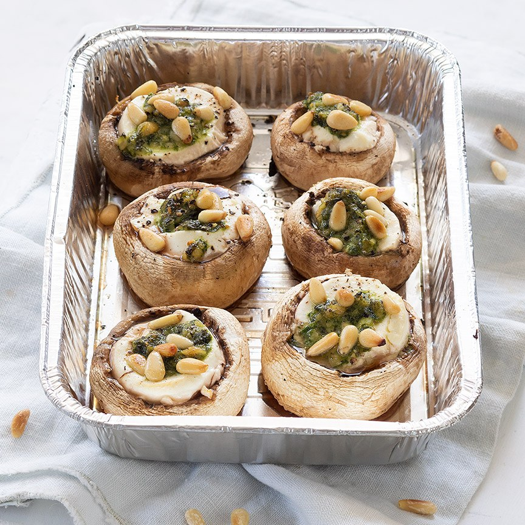

Gevulde champignons
Dit is een lekkere maar simpele voorgerecht.
Ingrediënten
- 8 grote champignons
- 125 gr zachte geitenkaas
- 4 eetlepels pesto
- handje pijnboompitten
Bereidingswijze
- Verwijder de steeltjes uit de champignons en wat van de binnenzijde.
- Bestrooi de binnenzijde met een klein snufje peper en zout.
- Vul ze met de geitenkaas.
- Schep een beetje pesto erop en bestrooi met een paar pijnboompitten.
- Zet de schaal ca. 10 minuten op de BBQ (doe bij voorkeur de deksel dicht) of zet 10 minuten in de oven op 200 graden.

Tip: wikkel er ook eens een plakje spek om de gevulde champignons